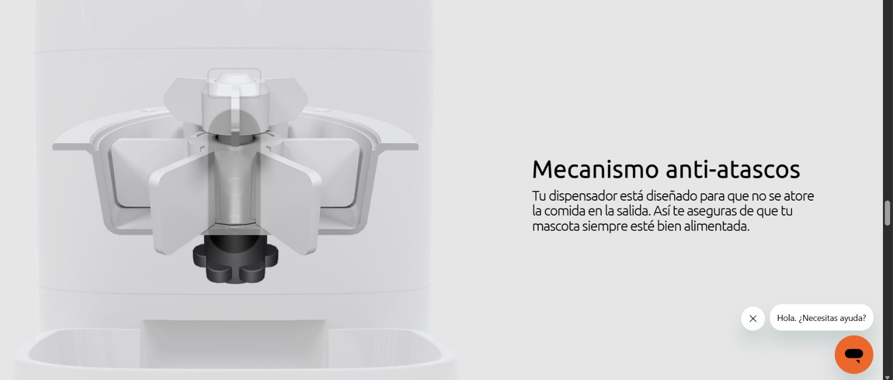
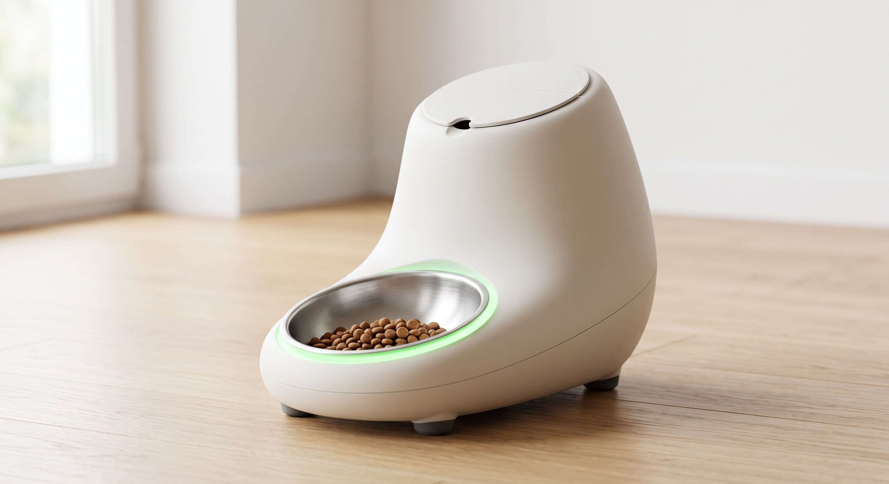
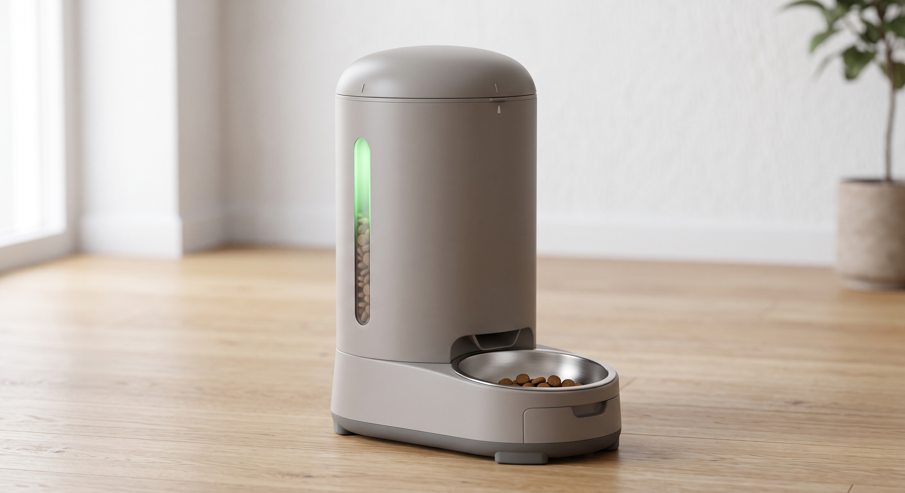
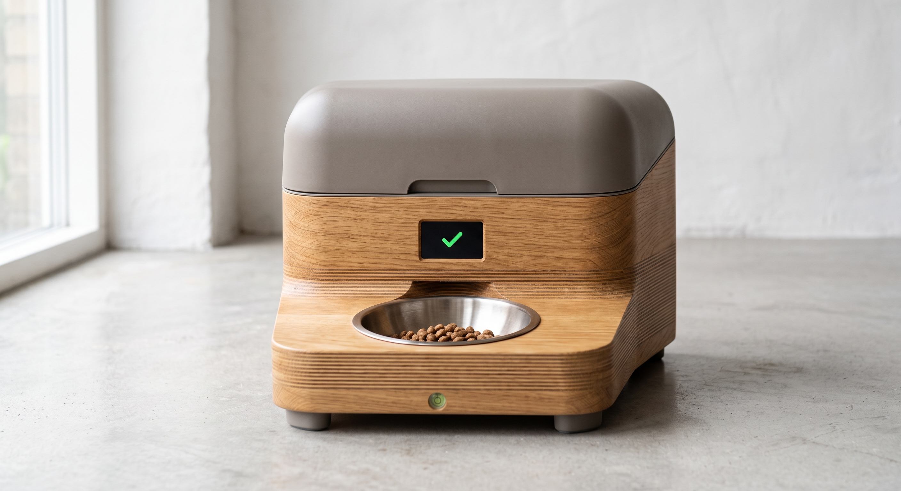

Principios de Diseño
Esta semana me tocó la parte del diseño de mi comedero inteligente Wooffi. Antes de generar conceptos, junté lo que ya tenía pensado (affordances, constraints, confirmación, costo-beneficio y ciclo de vida) y lo que salió de mis entrevistas, para que todos los conceptos partieran de la misma base.
Lo que entendí de cada principio y lo que quiero para mi proyecto
En pocas palabras, esto es lo que tengo pensado para cada principio:
- Affordances (cosas que son estandarizadas en todos los productos): te dicen cómo ocupar el producto. En mi caso: el plato va en el frente; el compartimiento de la comida debe tener un sistema que no permita que los perros lo abran, solo las personas; el diseño debe estar redondeado; el material debe ser duro y no destrozarse con las mordidas, como el aluminio; y debe prevenir errores de instalación.
- Constraints (poka-yoke): el diseño debe prevenir el error. Los errores comunes que se cometen en los comederos para perros están en el bloque de contexto de abajo.
- Confirmación de la acción: la pantalla cambia según el procesamiento de la acción.
- Costo-beneficio: jerarquizar según su importancia y responder: ¿el valor que agrega cada feature justifica su costo real?
- Ciclo de vida: las notas importantes que considero son:
- Necesita ser un dispositivo que no se pueda tirar fácilmente por perros pesados y/o grandes.
- No debe ser muy estorboso.
- Debe ser minimalista y elegante, pues va a estar dentro de la casa y no debe arruinar la estética. Sin embargo, debe ser de un material que los perros no puedan morder y que al mismo tiempo tenga buena higiene.
- Debe contar con un sistema antiatasco: el de la imagen de abajo, una especie de molinillo que gira para evitar que la comida se atore.
- Necesito ideas para limpiarlo.
- Después del diseño: boceto y CAD.
Las técnicas que voy a usar para generar los conceptos son:
- Morfología: descomponer el producto en características y definir las variantes de cada una.
- Analogías tecnológicas y de producto: soluciones que ya existen en otras áreas.
- Conceptos de diseño y renders con IA (con Nano Banana, el modelo de imagen de Gemini).
- Matriz de Pugh para elegir el concepto.

Mecanismo antiatasco de referencia: un rotor tipo molinillo que gira sobre la salida para que la comida no se atore
Entrevistas
Hice 12 entrevistas a dueños de perros, ya organizadas en dos tablas: la transcripción literal y los insights por persona. Dos notas para tenerlas presentes:
- Entrevista 7: quedó incompleta y sin identificar. Parece ser el inicio de otra entrevista, quizá la 10.
- Entrevista 12: la transcripción llegó cortada, justo antes de la pregunta de cuánto pagarían.
Material de la Semana 6
Estos son los prompts base del flujo de la clase:
| Prompt | Para qué sirve |
|---|---|
| 1 | Tabla morfológica (6–7 parámetros × 3 variantes) |
| 2 | Analogías tecnológicas |
| 3 | 3 conceptos de diseño (artefacto, app y landing page) |
| 4 | Prompts de render para Midjourney e Imagen 3 |
| 5 | Matriz de Pugh |
| 6 | Crítica del boceto técnico |
Dos cosas del material que conviene tener presentes:
- La clase pide que los 3 conceptos sean distintos en al menos 3 parámetros de la tabla.
- En la Matriz de Pugh, deseabilidad debe sumar ≥ 40 % del peso, con mínimo 2 criterios de deseabilidad y 2 de factibilidad.
Antes de los prompts: tres cosas que revisé
- Compartimiento "solo por animales". Asumí que querías decir "solo por humanos" (que el perro no pueda abrirlo). Si no es así, corrígelo.
- Comida húmeda. Tu constraint dice que la comida húmeda es incompatible, pero una entrevistada (husky) la pidió. Dejé la húmeda fuera de la v1 y la marqué como versión futura.
- Aluminio. Tienes que doblarlo y cortarlo a mano, y con un tope de $1,500 (ideal menos de $800) es poco realista para toda la carcasa. En el bloque propongo un enfoque híbrido: aluminio o acero solo donde el perro muerde (plato, base, frente) y piezas impresas por dentro. Los prompts le piden a Claude que lo considere.
Bloque de contexto
Este bloque junta mis affordances, constraints, costo-beneficio, ciclo de vida, ideas de limpieza y los hallazgos de las entrevistas. Lo pegué en cada uno de los prompts de la semana.
💬 Bloque de contexto (se pega en los prompts)
PRODUCTO: Wooffi, comedero inteligente para perros. Dispensador
automático con sensor de peso (celda de carga) y app con IA que
calcula y ajusta la porción para que el perro suba, baje o mantenga
peso. El foco del proyecto es la obesidad canina.
USUARIO Y ENTORNO: dueños de perros en México, uso dentro de casa
(la estética importa: debe ser minimalista y elegante). Perros de
chihuahua a labrador/pastor, a veces varios perros por casa.
Capacidad deseada: de 4 a 5 días de comida. Dimensiones máximas:
propón rangos razonables.
HALLAZGOS DE 12 ENTREVISTAS:
· Lo que más temen: que no funcione, que se atore, que sirva
porción incorrecta o doble, que falle la electricidad.
· Lo más pedido: programar horarios y porciones claras.
· Quieren respaldo de energía (batería o USB) y poco consumo.
· Higiene y limpieza fácil (incluida el agua) preocupan.
· Con varios perros, quieren porciones individuales.
· Pidieron: una zona que recoja croquetas y salpicaduras bajo el
plato, altura ajustable, cámara, fuente de agua, comida húmeda.
· Quien no tiene uno suele pensar que "es un tubo con alimento":
el diseño tiene que comunicar valor.
RESTRICCIONES DE MANUFACTURA:
· Costo por unidad: máximo $1,500 MXN; ideal menos de $1,000;
mejor menos de $800.
· Medios: impresión 3D, CNC y corte láser. El aluminio solo se
trabaja a mano (no hay cortadora).
· Propuesta de material: enfoque híbrido. Metal (aluminio/acero
inoxidable) en las zonas que el perro muerde o toca (plato,
frente, base); piezas impresas por dentro.
AFFORDANCES (cómo la forma dice cómo se usa):
· Plato al frente, claramente accesible.
· Compartimiento/tapa del depósito que un perro no pueda abrir,
pero un humano sí con una mano.
· Formas redondeadas, sin esquinas agudas (contour bias).
· Material duro que no se destroza con mordidas.
· Debe verse minimalista, no estorboso, y no poder tirarse
fácilmente por perros grandes y pesados.
CONSTRAINTS (poka-yoke: el diseño debe prevenir el error):
1. Equipo inclinado o inestable.
2. Croquetas incompatibles (muy grandes, irregulares o húmedas).
3. Depósito sobrellenado que provoca atasco por presión.
4. Depósito o rotor mal ensamblado o sin bloquear.
5. Alimentación eléctrica mal conectada (adaptador flojo, fuente
incorrecta).
6. Instalarlo lejos del Wi-Fi.
7. Red incompatible (algunos modelos solo aceptan 2.4 GHz).
8. Hora o zona horaria mal programada.
9. Lugar húmedo que aglutina las croquetas.
10. No limpiar antes del primer uso (polvo o residuos en rotor,
sensores o conductos).
SISTEMA ANTIATASCO: rotor con paletas giratorias sobre la salida
(como un molinillo o agitador) que remueve la comida para que no
se atore.
CONFIRMACIÓN DE LA ACCIÓN: la pantalla de la app cambia según el
estado del procesamiento (enviando, dispensando, completado, error).
El dispositivo también confirma con un indicador físico.
COSTO-BENEFICIO (de más a menos prioridad):
1. Dosificación precisa con sensor de peso: núcleo del producto,
alto valor, costo bajo-medio. SÍ.
2. Rotor antiatasco: responde al miedo n.º 1 de los usuarios,
costo bajo (pieza impresa + motor). SÍ.
3. Poka-yokes mecánicos (ensamble asimétrico, tope de llenado,
base lastrada): alto valor, costo casi nulo. SÍ.
4. Plato removible y bandeja recolectora bajo el plato: alto valor,
costo bajo. SÍ.
5. Alimentación USB-C con respaldo de batería: valor medio-alto,
costo medio. SÍ.
6. Indicador luminoso + confirmación en app: valor alto, costo bajo.
SÍ.
7. Metal en zonas de mordida: valor alto, costo y mano de obra
medio-altos. SÍ, solo donde se necesita.
8. Reconocimiento individual por perro, altura ajustable, fuente
de agua, cámara, comida húmeda: valor real pero costo alto
frente al presupuesto. NO en v1; quedan para la v2.
CICLO DE VIDA (resumen):
· Inicio: desembalar, lavar piezas, calibrar la báscula, conectar
al Wi-Fi.
· Uso diario: rellenar el depósito cada pocos días; confirmación
en app.
· Mantenimiento: limpieza semanal (rotor y plato); recordatorio
en la app; cambio de desecante.
· Falla y reparación: piezas impresas reemplazables (rotor,
paletas, tapa); electrónica accesible sin soldar.
· Fin de vida: materiales separables (metal, plástico,
electrónica) para reciclaje.
IDEAS DE LIMPIEZA:
· Depósito y rotor se desmontan sin herramientas (cuarto de vuelta).
· Plato de acero inoxidable removible y apto para lavavajillas.
· Interiores lisos, con radios generosos y sin esquinas donde se
acumule polvo.
· Modo "limpieza" en la app que coloca el rotor en posición de
extracción.
· Recordatorio semanal de limpieza en la app.
· Cepillo de limpieza incluido, o con alojamiento en la base.
· Tapa con sello y espacio para desecante contra humedad.
Morfología
En pocas palabras, la morfología consiste en descomponer el diseño en sus parámetros independientes y generar variantes de cada uno, para después recombinarlas en conceptos completos. Para mi comedero definí 7 parámetros con 3 variantes cada uno.
💬 Prompt 1: tabla morfológica
Actúa como diseñador industrial especializado en productos para
mascotas y hardware conectado para mercados latinoamericanos. Tu
sesgo es hacia opciones construibles con medios universitarios. Si
una variante es inviable para el equipo o supera el presupuesto, no
la incluyes.
[PEGAR BLOQUE DE CONTEXTO]
Genera una tabla morfológica con estos 7 parámetros, 3 variantes
genuinamente distintas por parámetro:
1. Forma del cuerpo
2. Material y acabado
3. Mecanismo antiatasco
4. Sistema de cierre/bloqueo de la tapa del depósito
5. Estabilidad y anclaje (para que perros pesados no lo tiren)
6. Indicador de confirmación en el dispositivo
7. Sistema de limpieza
Reglas:
· Cada variante indica entre paréntesis el proceso de manufactura
(impresión 3D / CNC / corte láser / doblado manual de metal) y su
costo relativo ($, $$, $$$).
· Cada variante debe ser compatible con los constraints; si alguna
introduce un riesgo de error nuevo, indícalo.
· Al menos una variante por parámetro debe ser poco convencional.
· Marca con ★ las variantes que respondan directamente a un
hallazgo de las entrevistas.
FORMATO: solo la tabla, sin texto adicional.
| Parámetro | Variante A | Variante B | Variante C |
Respuesta: tabla morfológica
| Parámetro | Variante A | Variante B | Variante C |
|---|---|---|---|
| 1. Forma del cuerpo | ★ Cilindro vertical de base ancha, con depósito alto y plato integrado al frente a ras del cuerpo (impresión 3D por secciones; $$) | ★ Cuerpo asimétrico tipo "guijarro": depósito inclinado hacia atrás y plato al frente en voladizo bajo, con la masa detrás (impresión 3D + lastre en la base; $$). Poco convencional. ⚠ Riesgo: si el perro apoya las patas en el plato, el voladizo puede volcarlo si no se lastra | Bloque bajo de perfil ancho, con esquinas de radio generoso (≥20 mm), formado por capas apiladas cortadas con láser y cubierto por una tapa curva impresa (corte láser + impresión 3D; $$). Poco convencional. ⚠ Riesgo: las uniones entre capas acumulan polvo, hay que sellarlas |
| 2. Material y acabado | ★ Híbrido: plato y frente de acero inoxidable o aluminio doblado a mano (zona de mordida e higiene); cuerpo y mecanismos en PETG impreso, mate y liso (doblado manual de metal + impresión 3D; $$) | Todo el cuerpo en ASA/PETG impreso con paredes gruesas (≥3 mm), lijado y acabado mate; solo el plato es de acero inoxidable (impresión 3D; $). ⚠ Riesgo: el plástico rayado por mordidas retiene bacterias y se degrada | Zócalo y frente de madera o MDF sellados con barniz apto para contacto con alimentos, cortados con láser/CNC, con cuerpo interior impreso y plato de acero inoxidable (CNC/corte láser + impresión 3D; $$). Poco convencional. ⚠ Riesgo: la madera absorbe humedad y olores si el sellado falla (constraint 9) |
| 3. Mecanismo antiatasco | ★ Rotor de paletas tipo molinillo sobre la salida, con cono deflector encima que reduce la presión de la columna de croquetas al sobrellenar (impresión 3D + motor con límite de torque; $$). ⚠ Riesgo: puede partir croquetas si no hay límite de torque | Tornillo sinfín de paso amplio con giro inverso breve cada cierto número de ciclos para liberar bloqueos (impresión 3D + motor a pasos; $$). ⚠ Riesgo: puede aplastar croquetas grandes o irregulares | Tolva de paredes lisas inclinadas ≥60° con motor vibrador intermitente que suelta la comida atorada (impresión 3D + micro-motor vibrador; $). Poco convencional. ⚠ Riesgo: el ruido puede asustar al perro y la vibración puede afectar la lectura de la celda de carga |
| 4. Cierre/bloqueo de la tapa del depósito | ★ Bayoneta de cuarto de vuelta con detente: hay que presionar y girar, y solo asienta en una posición (impresión 3D; $). Se abre con una mano | ★ Doble acción tipo tapa a prueba de niños: botón lateral oculto y deslizamiento simultáneo, que un hocico o una pata no logran (impresión 3D + resorte; $). ⚠ Riesgo: el resorte se fatiga con el uso | ★ Imanes de neodimio dispuestos en patrón asimétrico (la tapa solo cierra alineada) y sensor Hall que avisa en la app si quedó mal cerrada (impresión 3D + imanes + sensor Hall; $$). Poco convencional. ⚠ Riesgo: los imanes cerca de la celda de carga o del motor pueden interferir |
| 5. Estabilidad y anclaje | ★ Base ancha y lastrada con placa de acero o arena sellada (≈1.5–2 kg) y patas de goma antideslizantes (impresión 3D + corte manual de metal; $$). ⚠ Riesgo: el lastre sube el costo y el peso de envío | Respaldo en "L" que se apoya contra la pared y patas antideslizantes, con silueta compacta (impresión 3D + corte láser; $). ⚠ Riesgo: depende de dónde lo coloque el usuario y no sirve en el centro de una habitación | ★ Patas niveladoras con nivel de burbuja visible en la base y sensor de inclinación (IMU) que avisa en la app si el equipo está inclinado (impresión 3D + tornillos + IMU; $$). Poco convencional. ⚠ Riesgo: el usuario puede ignorar la alerta |
| 6. Indicador de confirmación en el dispositivo | ★ Aro LED RGB difuso alrededor de la base o del plato: azul enviando, verde dispensando/completado, rojo error (impresión 3D en material translúcido + LED direccionable; $) | ★ Pantalla OLED pequeña con ícono de estado y gramos dispensados, más un beep corto (impresión 3D/CNC para la ventana + OLED + zumbador; $$). ⚠ Riesgo: la pantalla ensucia y puede dañarse si queda al alcance del perro | ★ Ventana translúcida lateral con LED de fondo que ilumina el nivel de croquetas, más un zumbador piezo para confirmar y alertar (impresión 3D + LED + piezo; $). Poco convencional. ⚠ Riesgo: la ventana debilita la estructura y puede ser mordida |
| 7. Sistema de limpieza | ★ Depósito, rotor y tolva desmontables sin herramientas (cuarto de vuelta) y plato de acero inoxidable removible, apto para lavavajillas (impresión 3D; $) | ★ Modo "limpieza" en la app que deja el rotor en posición de extracción, más cajón deslizable bajo la salida y el plato que recoge croquetas y residuos (impresión 3D; $$). ⚠ Riesgo: un cajón mal insertado causa fugas, hay que hacerlo asimétrico | Raspador integrado que barre el conducto de salida en cada ciclo de limpieza, con alojamiento del cepillo en la base y espacio para desecante en la tapa (impresión 3D; $$). Poco convencional. ⚠ Riesgo: el raspador se desgasta y es una pieza más a reemplazar |
Conceptos de diseño
Con la tabla morfológica y las analogías, combiné variantes para armar tres conceptos de diseño del artefacto y de la app (por ahora sin landing page). Los tres tenían que ser distintos en al menos 3 parámetros; los míos difieren en los 7.
💬 Prompt 3: los 3 conceptos de diseño (artefacto + app)
Actúa como diseñador industrial y UX designer con experiencia en
hardware + software. Articulas conceptos completos del artefacto
físico y de la app, de modo que ambos refuercen el mismo lenguaje
de diseño.
[PEGAR BLOQUE DE CONTEXTO]
Tabla morfológica final (con variantes propias y de analogías):
[PEGAR TABLA ENRIQUECIDA]
Combinaciones a explorar (los 3 conceptos deben diferir en al
menos 3 parámetros):
CONCEPTO 1 — [nombre]: [variante elegida por parámetro, 1 a 7]
CONCEPTO 2 — [nombre]: [ídem]
CONCEPTO 3 — [nombre]: [ídem]
Para cada concepto desarrolla:
ARTEFACTO
· Instalación desde la caja: máximo 5 pasos, en lenguaje del usuario.
· Uso cotidiano: máximo 3 oraciones (rellenar, programar, ver
confirmación).
· Tabla de constraints: para cada uno de los 10 errores, cómo lo
previene este concepto (física, visual o de software).
· Principios activos: affordances, contour bias, consistencia,
confirmación.
· Limpieza: cómo se limpia en 3 pasos.
· Costo-beneficio: 3 decisiones de diseño clave, con valor al
usuario vs. costo, y costo estimado por unidad frente al tope de
$1,500.
· Ciclo de vida: qué pieza se desgasta primero y cómo se repara.
APP: pantalla principal
· Estado normal · Estado de alerta · Acción principal.
· Secuencia de confirmación al dispensar (enviando → dispensando →
completado → error) y qué hace el indicador físico en cada paso.
· Qué NO muestra, y por qué esa omisión es decisión de diseño.
FORMATO: un bloque por concepto con estos mismos encabezados.
Cierra con una tabla comparativa de 3 columnas con los riesgos
principales de cada concepto.
Respuesta
Las combinaciones del prompt venían vacías ([nombre]: [variante elegida]), así que propuse tres combinaciones yo, tomadas de la tabla morfológica y de las variantes nuevas de las analogías. Se diferencian entre sí en los 7 parámetros, más del mínimo de 3 que pide la clase. Si prefieres otras combinaciones, dime cuáles y lo rehago.
Dos aclaraciones:
- Los costos por unidad son estimaciones mías, sin cotizar componentes. Hay que validarlos con una lista de materiales real (semana 7).
- Supuse un depósito de ≈3–4 L (≈1.5–1.8 kg de croqueta). Cubre 4–5 días para perros chicos y medianos. Con un labrador, rellenarías cada 3–4 días.
Combinaciones elegidas
| Parámetro | C1 "Guijarro" | C2 "Torre" | C3 "Bloque" |
|---|---|---|---|
| 1. Forma | B: asimétrico tipo guijarro | A: cilindro vertical | C: bloque bajo de capas láser |
| 2. Material | A: híbrido metal + PETG | B: PETG/ASA + plato inox | C: madera sellada + plato inox |
| 3. Antiatasco | A: rotor de paletas + cono deflector | D: rotor de celdas con agitador | E: disco de ranuras |
| 4. Tapa | D: bayoneta + sensor de tapa | E: presionar y girar con clic | C: imanes asimétricos + Hall |
| 5. Estabilidad | D: base hueca rellenable con arena | A: base ancha con placa de acero | E: patas niveladoras + sensor de volcadura |
| 6. Indicador | A: aro LED RGB | C: ventana translúcida con nivel + piezo | B: OLED + beep |
| 7. Limpieza | A: desmontable por cuarto de vuelta | B: modo limpieza + cajón recolector | C: raspador + cepillo alojado |
Concepto 1: "Guijarro"
Cuerpo asimétrico y orgánico: la masa va atrás, el plato queda al frente en voladizo bajo. Frente y plato de metal, resto en PETG mate.
Artefacto
Instalación desde la caja
- Sácalo y llena la base con la arena incluida (el tapón solo cierra de un lado).
- Lava el depósito, el rotor y el plato con agua y jabón.
- Colócalo sobre piso plano y conecta el cable USB-C hasta oír el clic.
- Abre la app, elige tu Wi-Fi y confirma tu ciudad y la hora.
- Llena el depósito hasta la marca interna y cierra la tapa con un cuarto de vuelta.
Uso cotidiano. Rellenas cada pocos días hasta la marca de llenado. Las porciones las calcula la app según el peso y la meta del perro. El aro de luz te confirma cada comida sin abrir la app.
Constraints
| # | Error | Cómo lo previene |
|---|---|---|
| 1 | Inclinado/inestable | La arena en la base baja el centro de gravedad y el diseño asimétrico lo inclina hacia atrás, contra el voladizo. Patas de goma. |
| 2 | Croqueta incompatible | La app pide tipo y tamaño de croqueta al configurar. El rotor tiene luz máxima: lo grande no pasa. Física + software. |
| 3 | Sobrellenado | Cono deflector que reduce la presión y una línea de llenado moldeada en el interior. |
| 4 | Mal ensamblado | La bayoneta solo asienta en una posición y el sensor impide dispensar si no está asentada. Aviso en app. |
| 5 | Alimentación mal conectada | USB-C con retención por clic en la entrada y la app avisa al cambiar a batería. |
| 6 | Lejos del Wi-Fi | La app mide la señal al configurar y no deja terminar con señal débil. |
| 7 | Red incompatible | La app solo lista redes 2.4 GHz y explica por qué si no aparece la suya. |
| 8 | Hora mal programada | Se toma de la ciudad y la app muestra "¿son las 7:42 p. m.?" para confirmar. |
| 9 | Lugar húmedo | Tapa con sello y alojamiento para desecante. La app recuerda cambiarlo. |
| 10 | Sin limpiar antes de usar | La app bloquea el primer dispensado hasta confirmar "lavé las piezas". |
Principios activos. Affordances: el plato en voladizo al frente se lee como "aquí se come" y la bayoneta pide girarse. Contour bias: todo sin aristas, con radios ≥20 mm. Consistencia: la misma curva en cuerpo, tapa y plato. Confirmación: aro LED de estado.
Limpieza
- Gira la tapa y saca el depósito y el rotor.
- Lava el rotor, el depósito y el plato (el plato va al lavavajillas).
- Seca y vuelve a montar: solo encaja en una posición.
Costo-beneficio (estimado: $950–1,200)
- Metal solo en el plato y el frente: alto valor (resiste mordidas, higiene), costo medio-alto por el doblado manual.
- Arena en la base: alto valor (estabilidad con perros grandes), costo casi nulo y envío ligero.
- Sensor de tapa: alto valor (previene el error 4), costo bajo.
Ciclo de vida. La primera pieza en desgastarse es el rotor (fricción con la croqueta). Se cambia desmontándolo sin herramientas y se reimprime. Los metales y el PETG se separan para reciclaje.
App
- Estado normal: gramos servidos hoy vs. meta del día, próxima comida y peso del perro.
- Estado de alerta: la tarjeta pasa a rojo con la causa (tapa mal cerrada, depósito bajo, sin energía, atasco).
- Acción principal: botón "Servir porción ahora" y "Pausar".
Secuencia de confirmación
| Estado | App | Indicador físico |
|---|---|---|
| Enviando | "Enviando…" con spinner | Aro azul fijo |
| Dispensando | Barra de gramos en vivo | Aro azul que pulsa |
| Completado | "Listo: 120 g" con check | Aro verde 3 s |
| Error | Causa + qué hacer | Aro rojo parpadeante |
Qué NO muestra: la cámara y las métricas técnicas del motor. La app se centra en la porción y el peso del perro, que es el problema de fondo (obesidad); lo demás distrae.
Concepto 2: "Torre"
Cilindro vertical y compacto: ocupa poco piso y se lee como objeto de decoración. Plástico impreso y plato de acero inoxidable.
Artefacto
Instalación desde la caja
- Retira el empaque y coloca la torre sobre el piso, lejos de la humedad.
- Conecta la fuente a la parte trasera hasta oír el clic.
- Lava el depósito y el plato.
- Configura Wi-Fi y hora desde la app.
- Llena hasta la marca y cierra la tapa presionando y girando.
Uso cotidiano. Rellenas desde arriba cada pocos días y la ventana lateral te muestra cuánta croqueta queda. Los horarios y gramos se programan en la app. Una luz y un beep confirman cada ración.
Constraints
| # | Error | Cómo lo previene |
|---|---|---|
| 1 | Inclinado/inestable | Base ancha con placa de acero (≈1.5 kg) y patas antideslizantes. |
| 2 | Croqueta incompatible | Las celdas del rotor miden un tamaño fijo y lo que no cabe, no entra. La app pide el tipo. |
| 3 | Sobrellenado | El agitador remueve y la línea de llenado está marcada en la ventana. |
| 4 | Mal ensamblado | La tapa de presionar y girar solo cierra alineada y suena un clic. Sensor de cierre en app. |
| 5 | Alimentación mal conectada | Conector con retención y la app alerta si cambia a batería. |
| 6 | Lejos del Wi-Fi | Prueba de señal en la configuración. |
| 7 | Red incompatible | Solo se listan redes 2.4 GHz. |
| 8 | Hora mal programada | Hora automática y confirmación visual en pantalla. |
| 9 | Lugar húmedo | Sello y desecante; la ventana muestra si hay condensación. |
| 10 | Sin limpiar | Bloqueo del primer uso hasta confirmar la limpieza. |
Principios activos. Affordances: la tapa de dos acciones y la ventana de nivel comunican su función sin instrucciones. Contour bias: cilindro continuo sin esquinas. Consistencia: el mismo radio en tapa, base y plato. Confirmación: LED de la ventana + beep.
Limpieza
- Activa "modo limpieza" en la app para dejar el rotor en posición de extracción.
- Saca el depósito y el rotor y lava; vacía el cajón recolector.
- Seca y vuelve a insertar: el cajón solo entra en un sentido.
Costo-beneficio (estimado: $700–900)
- Todo en plástico impreso, plato en inox: valor medio (menos "premium"), costo mínimo y es el que más cabe en el rango ideal.
- Rotor de celdas: alto valor (porción repetible y menos atascos), costo bajo-medio.
- Cajón recolector: alto valor (higiene), costo bajo.
Ciclo de vida. La primera pieza en desgastarse es el resorte de la tapa (fatiga). Se cambia con un tornillo y se reimprime la pieza. Todo es separable para reciclaje.
App
- Estado normal: porción de hoy, nivel de croqueta y próxima comida.
- Estado de alerta: banner rojo con causa (nivel bajo, tapa mal cerrada, atasco).
- Acción principal: "Servir ahora".
Secuencia de confirmación
| Estado | App | Indicador físico |
|---|---|---|
| Enviando | "Enviando…" | Ventana en azul tenue |
| Dispensando | Gramos en vivo | Ventana pulsa; sin sonido |
| Completado | "Listo: 120 g" | Ventana verde + beep corto |
| Error | Causa y paso a seguir | Ventana roja + beep doble |
Qué NO muestra: historial detallado ni gráficas complejas en la pantalla principal. Se omiten para que el usuario vea de un vistazo si el perro comió, y el análisis queda en otra pestaña.
Concepto 3: "Bloque"
Bloque bajo y cálido, de capas de madera cortadas con láser. Pensado para que se vea como mueble. Plato de acero inoxidable.
Artefacto
Instalación desde la caja
- Colócalo en el piso y gira las patas hasta que la burbuja quede al centro.
- Conecta el cable USB-C.
- Lava el depósito y el plato.
- Configura Wi-Fi y hora en la app; la app confirma que está nivelado.
- Llena el depósito y cierra: la tapa solo se pega en una posición.
Uso cotidiano. Rellenas y cierras la tapa, que se une por imanes. La pantalla pequeña muestra el estado y la última porción. La app alerta si el equipo se mueve o se inclina.
Constraints
| # | Error | Cómo lo previene |
|---|---|---|
| 1 | Inclinado/inestable | Patas niveladoras con burbuja a la vista y sensor que avisa si se inclina o cae. |
| 2 | Croqueta incompatible | Las ranuras del disco son de tamaño fijo, y la app pide el tipo de croqueta. |
| 3 | Sobrellenado | Tolva con marca de llenado y tope en el interior. |
| 4 | Mal ensamblado | Imanes en patrón asimétrico: solo cierra alineada y el sensor Hall confirma. |
| 5 | Alimentación mal conectada | Retención por clic y aviso de batería. |
| 6 | Lejos del Wi-Fi | Prueba de señal. |
| 7 | Red incompatible | Solo 2.4 GHz y mensaje claro. |
| 8 | Hora mal programada | Hora automática, visible también en la OLED. |
| 9 | Lugar húmedo | Madera con sellador alimentario y desecante en tapa. La app avisa si la humedad es alta. |
| 10 | Sin limpiar | Bloqueo del primer uso hasta confirmar. |
Principios activos. Affordances: las capas visibles sugieren apilar y las patas, nivelar. Contour bias: esquinas con radio ≥20 mm. Consistencia: el mismo radio y el mismo veteado en todo el cuerpo. Confirmación: pantalla OLED + beep.
Limpieza
- Quita la tapa magnética y saca el disco.
- Pasa el raspador integrado, usa el cepillo guardado en la base y lava el plato.
- Seca y vuelve a colocar; los imanes guían la alineación.
Costo-beneficio (estimado: $1,100–1,400, cerca del tope)
- Madera sellada y corte láser: alto valor percibido, costo medio, pero el sellado debe ser bueno.
- Sensor de volcadura + patas niveladoras: valor medio-alto (previene el error 1 y detiene el motor si cae), costo medio.
- Pantalla OLED: valor medio, costo medio-alto y es de lo primero que se podría quitar.
Ciclo de vida. La primera pieza en desgastarse es el raspador (fricción). Se reemplaza con una impresión. La madera es la parte más delicada con la humedad y la limpieza frecuente.
App
- Estado normal: porción de hoy, estado de nivelación y próxima comida.
- Estado de alerta: tarjeta roja con causa (inclinado, tapa abierta, humedad alta).
- Acción principal: "Servir ahora".
Secuencia de confirmación
| Estado | App | Indicador físico |
|---|---|---|
| Enviando | "Enviando…" | OLED con icono de conexión |
| Dispensando | Gramos en vivo | OLED con barra de progreso |
| Completado | "Listo: 120 g" | OLED con check + beep corto |
| Error | Causa y acción | OLED con "!" + beep doble |
Qué NO muestra: la lectura cruda de la celda de carga. Se omite porque no se entiende; el usuario solo necesita saber la porción y si hubo problema.
Riesgos principales
| C1 Guijarro | C2 Torre | C3 Bloque | |
|---|---|---|---|
| Riesgo n.º 1 | El doblado manual del metal es lento y poco repetible; puede disparar el costo. | Se percibe como "un tubo con alimento", justo lo que dijeron en las entrevistas. | La madera absorbe humedad y olores si el sellado falla (constraint 9). |
| Riesgo n.º 2 | El voladizo del plato podría volcarlo si el perro apoya las patas, aunque la arena ayuda. | El rotor de celdas puede partir croquetas o no manejar tamaños muy distintos. | Los imanes cerca de la celda de carga y del motor pueden causar interferencia. |
| Riesgo n.º 3 | La forma asimétrica es más difícil de imprimir en secciones y de ensamblar. | El resorte de la tapa se fatiga con el uso. | Es el más caro y el más cercano al tope de $1,500; la OLED es prescindible. |
Para mi pausa antes de la Matriz de Pugh: C2 es el que mejor encaja en el presupuesto, C1 es el más distintivo y C3 el más "mueble" pero el más riesgoso.
Analogías tecnológicas
En pocas palabras, las analogías consisten en buscar cómo otros sectores ya resolvieron el mismo problema de experiencia de usuario, para importar su lógica de solución y no solo copiar lo que hacen otros comederos. Elegí los tres parámetros que sugería el prompt: antiatasco, cierre de tapa y estabilidad.
💬 Prompt 2: analogías tecnológicas y de producto
Actúa como consultor de innovación de diseño especializado en
transferir soluciones entre sectores. No buscas inspiración
estética: buscas mecanismos, formas de instalación, sistemas de
feedback y lógicas de uso que ya funcionaron con usuarios reales
FUERA del sector de comederos y productos para mascotas.
[PEGAR BLOQUE DE CONTEXTO]
Tabla morfológica preliminar: [PEGAR TABLA DEL PROMPT 1, con las
variantes que yo agregue]
Parámetros donde quiero más inspiración: [ELEGIR 3 de los 7;
sugerencia: antiatasco, cierre de tapa, estabilidad]
Para cada parámetro entrega:
· 2 ANALOGÍAS TECNOLÓGICAS (mecanismos de otra tecnología:
por ejemplo máquinas expendedoras, molinos, sembradoras,
dispensadores de pastillas).
· 2 ANALOGÍAS DE PRODUCTO (productos de consumo con la misma
experiencia de uso: por ejemplo tapas a prueba de niños,
biberones, cafeteras).
Cada analogía incluye: producto y sector de origen, problema de
experiencia que resuelve, lógica de solución (el mecanismo, no la
estética), y cómo trasplantarla a nuestro parámetro, con su
implicación de manufactura y costo relativo.
Cierra con "VARIANTES SUGERIDAS PARA AGREGAR A LA TABLA":
parámetro, variante nueva, proceso de manufactura y analogía de la
que viene.
Respuesta
Ejecuté este prompt con la tabla morfológica que te di en el turno anterior y con los 3 parámetros que sugería el prompt (antiatasco, cierre de tapa y estabilidad). Si quieres analogías para otros parámetros, dime cuáles.
Parámetro 3: Mecanismo antiatasco
Problema de experiencia: el usuario teme que la comida se atore, y el atasco por presión empeora cuando se sobrellena el depósito (constraint 3).
Analogía tecnológica 1: Dosificador de semillas de sembradora · Agricultura
- Problema que resuelve: las semillas irregulares forman puentes en la tolva y el flujo se interrumpe.
- Lógica de solución: un agitador de paletas lento remueve la semilla sobre un disco o rotor con celdas que entrega un volumen fijo por giro.
- Trasplante: el rotor de paletas actual pasa a ser un rotor de celdas con agitador encima, de modo que cada giro entrega un volumen conocido y la celda de carga solo lo verifica.
- Manufactura: impresión 3D y motor con límite de torque. $$.
Analogía tecnológica 2: Silos y tolvas industriales · Procesos industriales / minería
- Problema que resuelve: el material granulado forma "arcos" o "ratoneras" que bloquean la salida.
- Lógica de solución: paredes de tolva muy inclinadas y un cono invertido (bin activator) que desvía el peso de la columna de material para que no se comprima sobre la salida.
- Trasplante: cono deflector sobre el rotor y tolva con paredes lisas a ≥60°. Esto reduce la presión de la columna al sobrellenar, que es el problema de fondo del constraint 3.
- Manufactura: impresión 3D. $.
Analogía de producto 1: Dispensador de cereal de gravedad · Hostelería y buffets
- Problema que resuelve: entregar una porción por accionamiento sin que el cereal se atore ni se desborde.
- Lógica de solución: una paleta o compartimento giratorio mide y empuja la porción en cada giro.
- Trasplante: reforzar la idea de "una porción por ciclo" y que el rotor nunca deje caer comida libremente.
- Manufactura: impresión 3D. $.
Analogía de producto 2: Máquina de chicles y dulces · Confitería
- Problema que resuelve: entregar una pieza o unidad a la vez de un depósito lleno de objetos irregulares.
- Lógica de solución: un disco con ranuras gira y cada ranura aloja una cantidad fija, de modo que solo sale lo que cabe en la ranura.
- Trasplante: un disco con ranuras redondeadas dimensionadas para croquetas estándar. Ayuda a constraint 2, porque una croqueta demasiado grande simplemente no cabe, pero necesita probarse con croqueta de perro chico.
- Manufactura: impresión 3D o corte láser en capas. $.
Parámetro 4: Sistema de cierre/bloqueo de la tapa
Problema de experiencia: la tapa debe ser imposible de abrir para un perro, fácil con una mano para un humano, y el usuario debe saber que quedó bien cerrada (constraint 4).
Analogía tecnológica 1: Conectores de bayoneta · Aeronáutica y militar (MIL-DTL) y video (BNC)
- Problema que resuelve: conexiones que no se aflojan con vibración y que el usuario sabe cuándo quedaron cerradas.
- Lógica de solución: un cuarto de vuelta contra una rampa con detente. El tope se siente y se oye al asentar.
- Trasplante: bayoneta de cuarto de vuelta con detente en la tapa del depósito.
- Manufactura: impresión 3D. $.
Analogía tecnológica 2: Interruptores de enclavamiento de seguridad · Maquinaria industrial y centrífugas de laboratorio
- Problema que resuelve: evitar que la máquina opere con la guarda abierta.
- Lógica de solución: un sensor (microinterruptor o magnético) corta el accionamiento si la tapa no está cerrada.
- Trasplante: un sensor Hall o microinterruptor que impide dispensar y avisa en la app si la tapa no está asentada. Va más allá de la tapa: previene el error en el software.
- Manufactura: impresión 3D y sensor de bajo costo. $. Si se usa un imán, mantenerlo alejado de la celda de carga y del motor.
Analogía de producto 1: Tapas a prueba de niños de medicamentos · Farmacia
- Problema que resuelve: que un niño no pueda abrir, pero un adulto sí, con una mano.
- Lógica de solución: acción doble: presionar y girar a la vez. Un movimiento solo no abre.
- Trasplante: tapa de presionar y girar. Un hocico o una pata difícilmente hacen las dos acciones coordinadas.
- Manufactura: impresión 3D. $. Hay que cuidar el desgaste de los dientes con el uso.
Analogía de producto 2: Olla de presión y multicocinas · Electrodomésticos de cocina
- Problema que resuelve: que la tapa quede bien alineada y que el equipo no opere si no está cerrada.
- Lógica de solución: marcas de alineación asimétricas, giro hasta un tope y un bloqueo que impide operar si no está asentada, con aviso sonoro al cerrar.
- Trasplante: marcas visibles de alineación con un clic audible o un beep de confirmación en el dispositivo al cerrar.
- Manufactura: impresión 3D, y un zumbador si se desea. $.
Parámetro 5: Estabilidad y anclaje
Problema de experiencia: el equipo debe resistir a perros grandes y pesados, y no verse como un objeto pesado y estorboso (constraint 1).
Analogía tecnológica 1: Conos y barreras de tráfico · Infraestructura vial
- Problema que resuelve: objetos ligeros de transportar que deben pesar mucho una vez en uso.
- Lógica de solución: bases huecas rellenables con agua o arena, o bases de caucho pesado.
- Trasplante: base hueca y sellada que el usuario llena con arena al instalarlo. Llega ligero en el envío y pesado en uso. También reduce el costo del lastre.
- Manufactura: impresión 3D y arena. $.
Analogía tecnológica 2: Pies niveladores de maquinaria · Industrial y laboratorio
- Problema que resuelve: equipos sobre suelos irregulares que deben quedar nivelados.
- Lógica de solución: patas con rosca que se ajustan y un nivel de burbuja a la vista.
- Trasplante: patas niveladoras y un nivel de burbuja en la base, o un sensor de inclinación (IMU) que avisa en la app. Apoya la idea de poka-yoke visual: se ve si está mal nivelado.
- Manufactura: impresión 3D y tornillos. $$.
Analogía de producto 1: Kits antivuelco de muebles · Mobiliario infantil y del hogar
- Problema que resuelve: evitar que un mueble alto se vuelque con un empujón o un niño trepando.
- Lógica de solución: una correa o escuadra que ancla la parte alta a la pared.
- Trasplante: una correa o respaldo de ancla opcional a la pared para usuarios con perros muy grandes. Es una opción, no un requisito.
- Manufactura: impresión 3D o corte láser. $.
Analogía de producto 2: Calefactores eléctricos de espacio · Electrodomésticos
- Problema que resuelve: seguridad si el equipo se vuelca.
- Lógica de solución: un interruptor de volcadura corta la energía si el equipo se inclina más allá de cierto ángulo.
- Trasplante: si el IMU detecta que el equipo se cayó, el motor se detiene y la app avisa. Evita que dispense comida con el equipo caído.
- Manufactura: sensor IMU de bajo costo. $.
Variantes sugeridas para agregar a la tabla
| Parámetro | Variante nueva | Manufactura | Viene de |
|---|---|---|---|
| 3. Antiatasco | Rotor de celdas con agitador de paletas y cono deflector encima (la celda de carga verifica el gramaje real) | Impresión 3D + motor con límite de torque, $$ | Sembradora + silo industrial |
| 3. Antiatasco | Disco con ranuras redondeadas dimensionadas para croqueta estándar (⚠ probar con croqueta de perro chico y grande) | Impresión 3D o corte láser en capas, $ | Máquina de chicles |
| 4. Cierre de tapa | Bayoneta con detente + sensor de tapa asentada que impide dispensar y avisa en la app | Impresión 3D + sensor, $ | Conector de bayoneta + enclavamiento de seguridad |
| 4. Cierre de tapa | Presionar y girar con marcas de alineación y clic audible al cerrar | Impresión 3D, $ | Tapa a prueba de niños + olla de presión |
| 5. Estabilidad | Base hueca y sellada que el usuario rellena de arena al instalarlo (ligera en el envío) | Impresión 3D + arena, $ | Conos y barreras de tráfico |
| 5. Estabilidad | Patas niveladoras con nivel de burbuja y sensor de volcadura que detiene el motor si el equipo cae | Impresión 3D + IMU, $$ | Pies niveladores + calefactor con interruptor de volcadura |
Para mi pausa de reflexión: la variante que más me parece que une valor y costo es bayoneta con sensor de tapa. Cubre el constraint 4 con casi nada de costo extra y aporta una confirmación física y digital. El rotor de celdas es la más interesante de explorar, pero hay que verificar que no parta croquetas.
Renders con Gemini
Para ver mis conceptos antes de llevarlos a CAD, le pedí a Claude que armara un prompt de render por concepto para Nano Banana (el modelo de imagen de Gemini), y con ellos generé las imágenes. Cada prompt describe la forma, los materiales, el indicador de confirmación y el entorno, sin imagen de referencia, para que la IA no copiara el exterior del mecanismo.
Concepto 1: "Guijarro"
💬 Prompt (mi solicitud a Claude)
Actúa como director de arte con experiencia en prompts de render
para diseño industrial de producto. Conoces las diferencias entre:
· Midjourney: descriptores en cadena separados por comas, parámetros
técnicos al final (--ar, --style raw). Muy vistoso, pero
interpreta creativamente lo que no se restringe.
· Nano Banana (modelo de imagen de Gemini): responde a lenguaje
descriptivo fluido, mantiene mejor la fidelidad a objetos
específicos y permite adjuntar una imagen de referencia.
Primero, con toda la información de la propuesta 1, arma tu propio prompt para el render de nano banana
Respuesta
Este es el prompt de Nano Banana para el Concepto 1 "Guijarro". Lo escribí en español, en párrafos descriptivos, del objeto al entorno. Si prefieres inglés, te lo paso.
💬 Prompt para Nano Banana: render exterior (vista tres cuartos)
Genera un render fotorrealista de producto, estilo fotografía de estudio de diseño industrial, de un comedero automático inteligente para perros llamado Wooffi.
Forma: el cuerpo es asimétrico y orgánico, como un guijarro pulido. La masa principal está atrás: un depósito de croquetas alto que se inclina suavemente hacia atrás. Al frente, a nivel bajo, sale en voladizo un plato de comida. Todas las aristas y esquinas son muy redondeadas, con radios generosos, sin ningún borde afilado. La silueta es compacta y minimalista, de unos 35 cm de alto, 28 cm de ancho y 30 cm de fondo.
Materiales: el cuerpo y el depósito son de plástico mate de acabado liso y suave, en blanco hueso cálido. El frente y el plato son de acero inoxidable cepillado, que se ve resistente a mordidas. La base es ancha y pesada, con cuatro patas pequeñas de goma gris oscura. Arriba hay una tapa redonda del mismo plástico mate, con una línea fina de separación y una pequeña muesca que sugiere un giro de cuarto de vuelta.
Detalle de confirmación: un aro de luz LED suave y difusa, color verde, rodea la base del plato y se ve encendido, indicando que la porción se sirvió correctamente. Sin pantallas, sin botones visibles, sin texto, sin logos.
Plato: tiene unas pocas croquetas marrones redondas y uniformes. Debajo del plato se ve una ranura baja para recoger las croquetas que se caen.
Entorno y cámara: sala moderna y luminosa, piso de madera clara y pared blanca lisa de fondo, ligeramente desenfocada. Vista de tres cuartos, a la altura de la cámara a media distancia, con el producto centrado. Luz natural suave de ventana desde la izquierda, sombras suaves, reflejos limpios sobre el acero. Sin personas ni animales en la escena. Alta resolución, sin deformaciones, formas simples y limpias.

Render del Concepto 1 "Guijarro" generado con Nano Banana
Cómo usarlo
- Sin imagen de referencia en este render. La foto del rotor que subiste muestra el mecanismo interno, y si la adjuntas aquí, Nano Banana podría copiar su forma y estética en el exterior.
- Segundo render opcional (corte interior). Con la imagen del rotor adjunta, puedes pedir un corte transversal del Guijarro mostrando el depósito inclinado, el cono deflector y el rotor de paletas sobre la salida. Ahí sí conviene usar la referencia.
- Render en contexto de uso. Si quieres ver el producto en uso, cambia la línea de "Sin personas ni animales" por: "Un perro labrador come del plato, de perfil, con la cabeza inclinada".
Qué evaluar en el resultado
- Affordances: ¿se entiende a primera vista dónde se come y que la tapa se gira, sin leer nada?
- Contour bias: ¿todas las esquinas se ven suaves y consistentes, o la IA metió aristas rectas?
- Confirmación: ¿el aro de luz se ve claro y discreto, o parece una pantalla o un adorno?
Una advertencia: los modelos de imagen tienden a "mejorar" el diseño, así que revisa que no hayan agregado pantallas, asas o patas que tu concepto no tiene. Si pasa, repite el prompt reforzando "sin elementos adicionales".
Concepto 2: "Torre"
💬 Prompt (mi solicitud a Claude)
Ahora vamos con el prompt de la segunda propuesta de la misma manera
Respuesta
Este es el prompt de Nano Banana para el Concepto 2 "Torre", con la misma estructura que el anterior.
💬 Prompt para Nano Banana: render exterior (vista tres cuartos)
Genera un render fotorrealista de producto, estilo fotografía de estudio de diseño industrial, de un comedero automático inteligente para perros llamado Wooffi.
Forma: el cuerpo es un cilindro vertical, alto y esbelto pero estable, con una base notablemente más ancha que la parte superior, como una torre de perfil suave. Todas las aristas y transiciones son redondeadas y continuas, sin bordes afilados. La parte superior termina en una tapa redonda ligeramente abombada. La silueta es compacta y minimalista, de unos 40 cm de alto, 24 cm de diámetro en el cuerpo y 30 cm en la base. Al frente, un plato bajo de acero inoxidable queda integrado a ras del cuerpo, sin sobresalir mucho, y debajo del plato hay un pequeño cajón deslizable que recoge croquetas y salpicaduras.
Materiales: el cuerpo es de plástico mate liso y suave, en gris cálido muy claro. El plato es de acero inoxidable cepillado. La base es ancha y pesada, con un anillo inferior un poco más oscuro y patas de goma gris oscura. La tapa superior es del mismo plástico mate y tiene dos pequeñas marcas de alineación y un contorno que sugiere que se abre presionando y girando.
Detalle de confirmación: en el costado del cuerpo hay una ventana vertical angosta y translúcida, de bordes redondeados, a través de la cual se ve el nivel de croquetas dentro del depósito. Una luz LED suave y difusa, color verde, ilumina la ventana desde atrás e indica que la porción se sirvió correctamente. Sin pantallas, sin botones visibles, sin texto, sin logos.
Plato: tiene unas pocas croquetas marrones redondas y uniformes.
Entorno y cámara: sala moderna y luminosa, piso de madera clara y pared blanca lisa de fondo, ligeramente desenfocada. Vista de tres cuartos, a la altura de la cámara a media distancia, con el producto centrado. Luz natural suave de ventana desde la izquierda, sombras suaves, reflejos limpios sobre el acero. Sin personas ni animales en la escena. Alta resolución, sin deformaciones, formas simples y limpias.

Render del Concepto 2 "Torre" generado con Nano Banana
Notas
- Color. Elegí gris cálido claro para este concepto, en lugar del blanco hueso del Guijarro. Así puedes distinguirlos al compararlos en la Matriz de Pugh. Si prefieres el mismo color en los tres para comparar solo la forma, cambia esa línea.
- Riesgo de "tubo". En las entrevistas, quien no tiene comedero lo imagina como "un tubo con alimento". Por eso pedí una base notablemente más ancha que el cuerpo y la ventana lateral, para que no se lea como un cilindro liso. Si el resultado sale demasiado tubular, repite el prompt reforzando "base muy ancha y estable".
- Imagen de referencia. Igual que antes, no la adjuntes en este render. Úsala solo en un corte interior del rotor de celdas con agitador.
- Ventana. Es el elemento que más puede salir mal: los modelos tienden a convertirla en pantalla o en una tira de luz exterior. Revisa que se vea translúcida y con croquetas detrás.
Qué evaluar en el resultado
- Affordances: ¿se entiende que la tapa se abre presionando y girando, y que la ventana sirve para ver el nivel?
- Contour bias: ¿el cilindro y la base transicionan suavemente, sin aristas rectas ni escalones duros?
- Confirmación: ¿la luz de la ventana se lee como un estado (verde = listo) y no como adorno?
Concepto 3: "Bloque"
💬 Prompt (mi solicitud a Claude)
Bien, ahora vamos con el de la tercera.
Respuesta
Este es el prompt de Nano Banana para el Concepto 3 "Bloque", con la misma estructura que los anteriores.
💬 Prompt para Nano Banana: render exterior (vista tres cuartos)
Genera un render fotorrealista de producto, estilo fotografía de estudio de diseño industrial, de un comedero automático inteligente para perros llamado Wooffi.
Forma: el cuerpo es un bloque bajo y ancho, de perfil horizontal y estable, con esquinas verticales y aristas muy redondeadas, con radios generosos de unos 2 cm, sin ningún borde afilado. Está construido con capas horizontales apiladas de madera, y el borde de cada capa se ve como una línea fina que recorre todo el contorno. Encima, una tapa curva y suave, de plástico mate, cubre el depósito y se une al cuerpo con una línea de separación muy limpia. La silueta es compacta y minimalista, de unos 28 cm de alto, 36 cm de ancho y 28 cm de fondo. Al frente, un plato bajo de acero inoxidable queda integrado a ras del cuerpo, dentro de una concavidad redondeada.
Materiales: la madera de las capas es clara, de tono miel o roble, con acabado satinado y sellado, que se ve cálida y duradera, con veteado visible. La tapa curva es de plástico mate en gris cálido claro. El plato es de acero inoxidable cepillado. En la base hay cuatro patas niveladoras cortas, de goma gris oscura, y en el frente de la base, una pequeña ventana circular con un nivel de burbuja, discreta y alineada.
Detalle de confirmación: en el frente, arriba del plato, hay una pantalla OLED pequeña, rectangular y de bordes redondeados, embutida a ras en la madera, que muestra únicamente un icono de check verde sobre fondo negro, sin ningún texto ni números. Sin botones visibles, sin otros textos, sin logos.
Plato: tiene unas pocas croquetas marrones redondas y uniformes.
Entorno y cámara: sala moderna y luminosa, piso de cerámica o concreto pulido en gris claro y pared blanca lisa de fondo, ligeramente desenfocada. Vista de tres cuartos, a la altura de la cámara a media distancia, con el producto centrado. Luz natural suave de ventana desde la izquierda, sombras suaves, reflejos limpios sobre el acero. Sin personas ni animales en la escena. Alta resolución, sin deformaciones, formas simples y limpias.

Render del Concepto 3 "Bloque" generado con Nano Banana
Notas
- Piso. Cambié el piso de madera clara de los otros dos renders por uno gris claro. Con un piso de madera, el producto de madera se confundiría con el fondo y perdería lectura.
- Mueble, no caja. Este concepto busca verse como mueble, pero hay riesgo de que salga como un cajón o una caja de herramientas. Por eso pedí la tapa curva de plástico y la concavidad del plato. Si sale demasiado rectangular, refuerza "esquinas y aristas muy redondeadas, radio de 2 cm".
- Pantalla y texto. Este es el elemento más delicado: los modelos de imagen tienden a llenar las pantallas con texto o números. Si pasa, repite el prompt reforzando "la pantalla muestra solo un check verde, sin ningún carácter".
- Imagen de referencia. Igual que antes, no la adjuntes en el render exterior.
- Costo. Es el concepto más cercano al tope de $1,500. Si el render te convence pero la OLED no, puedes probar una versión sin pantalla, con solo el aro LED del Concepto 1, y compararlas.
Qué evaluar en el resultado
- Affordances: ¿se entiende dónde se come y que las capas visibles son estructura, no decoración? ¿La burbuja se lee como un nivel?
- Contour bias: ¿todas las esquinas y aristas son suaves y consistentes entre la madera y la tapa?
- Confirmación: ¿el check de la pantalla se lee de un vistazo, sin texto extra?
Matriz de Pugh
En pocas palabras, la Matriz de Pugh sirve para elegir un concepto comparándolo contra los demás con criterios ponderados, usando uno como referencia (datum). Así la decisión no depende de "cuál me gusta más". Puse deseabilidad y factibilidad con peso explícito, y elegí la Torre como datum.
Antes de ejecutar el prompt
Aquí está el Prompt 5, para que lo revises antes de ejecutarlo. Ya incluye tus tres conceptos y la propuesta de criterios y pesos.
Dos decisiones que conviene que confirmes
- Datum. En la plantilla de la clase el datum era el Concepto 3, pero la regla es usar "el más convencional o la opción obvia". Para ti ese es C2 "Torre": cilindro de plástico, el más barato y el más parecido a lo que ya existe en el mercado. Así C1 y C3 se evalúan contra él. Si prefieres otro datum, cámbialo en el prompt.
- Criterios. Propongo 10 criterios con deseabilidad al 50 % (la clase pide mínimo 40 %), porque tu usuario no es técnico. Los puse en el prompt como propuesta ajustable. Tres criterios salen de tus entrevistas: confiabilidad antiatasco (el miedo n.º 1), percepción de valor ("es un tubo con alimento") y estabilidad con perros grandes.
💬 Prompt 5: construcción de la Matriz de Pugh
Actúa como un ingeniero de producto con experiencia en selección
de concepto usando la Matriz de Pugh para productos de hardware +
software en etapa de prototipo temprano. Tu metodología asegura que
los criterios representen tanto la perspectiva del usuario
(deseabilidad) como la del equipo de desarrollo (factibilidad), con
peso explícito para cada uno. No permites que la matriz esté
dominada por criterios técnicos cuando el producto va dirigido a un
usuario no técnico.
[PEGAR BLOQUE DE CONTEXTO]
Somos un equipo de ingeniería en México. Tenemos 3 conceptos de
diseño del comedero Wooffi para evaluar:
CONCEPTO 1 — "Guijarro" (el más distintivo): cuerpo asimétrico y
orgánico con la masa atrás y el plato en voladizo bajo al frente.
Frente y plato de metal (aluminio/acero inox doblado a mano), resto
en PETG mate; rotor de paletas con cono deflector, tapa de bayoneta
con sensor, base hueca rellenable con arena y aro LED de estado.
Costo estimado: $950–1,200 por unidad.
CONCEPTO 2 — "Torre" (el que mejor encaja en el presupuesto; ES EL
DATUM): cilindro vertical de base ancha en PETG/ASA impreso con plato
de acero inoxidable; rotor de celdas con agitador, tapa de presionar
y girar con clic, base lastrada con placa de acero, ventana lateral
translúcida con nivel de croqueta y LED, y cajón recolector bajo el
plato. Costo estimado: $700–900 por unidad.
CONCEPTO 3 — "Bloque" (el más "mueble", pero el más riesgoso): bloque
bajo de capas de madera cortadas con láser, sellada para contacto
con alimentos, con tapa curva de plástico y plato de acero
inoxidable; disco de ranuras, tapa de imanes asimétricos con sensor
Hall, patas niveladoras con sensor de volcadura y pantalla OLED con
beep. Costo estimado: $1,100–1,400 por unidad.
Riesgos principales ya identificados:
· C1: el doblado manual del metal es lento y poco repetible, el
voladizo del plato podría volcarlo y la forma asimétrica es más
difícil de ensamblar.
· C2: se puede percibir como "un tubo con alimento", el rotor de
celdas podría partir croquetas y el resorte de la tapa se fatiga.
· C3: la madera absorbe humedad si el sellado falla, los imanes
pueden interferir con la celda de carga y el motor, y es el más
caro y el más cercano al tope.
Nuestro usuario: dueño de perro en México, no técnico, que usa el
producto dentro de casa. Teme que no funcione, que se atore o que
sirva una porción incorrecta; quiere programar horarios, limpiarlo
fácilmente y que se vea bien en su casa.
Restricciones de manufactura:
· Medios: impresión 3D, CNC y corte láser; el aluminio solo se
trabaja a mano.
· Presupuesto por unidad: máximo $1,500 MXN; ideal menos de $1,000;
mejor menos de $800.
· Volumen objetivo: [N unidades para prueba de mercado; si no lo sé,
asume 10].
Construye la Matriz de Pugh con estas especificaciones:
1. CRITERIOS: valida y, si lo ves necesario, ajusta esta propuesta
de 10 criterios. Si cambias algo, explica por qué en una línea.
Los pesos deben sumar 100 y la deseabilidad debe sumar mínimo 40%.
DESEABILIDAD (50%)
· Facilidad de instalación sin instrucciones (8%)
· Legibilidad del estado sin abrir la app (8%)
· Percepción de valor, material y estética en el hogar (10%)
· Facilidad de limpieza e higiene (10%)
· Confiabilidad percibida y real del antiatasco y la dosificación
(8%)
· Estabilidad ante perros grandes y pesados (6%)
FACTIBILIDAD (50%)
· Costo de manufactura por unidad frente al tope de $1,500 (20%)
· Complejidad de fabricación y ensamble con los medios del
laboratorio (12%)
· Disponibilidad de materiales en México y tiempo de fabricación
del prototipo (8%)
· Resistencia a mordidas, humedad y vuelcos (10%)
2. EVALUACIÓN: compara C1 y C3 contra C2 (datum) en cada criterio.
Usa + (mejor), – (peor), S (igual). Justifica brevemente cada
evaluación no obvia, y marca con (supuesto) las que dependen de
estimaciones mías no verificadas.
3. PUNTUACIÓN: calcula el puntaje ponderado de cada concepto
(+ = +peso, – = –peso, S = 0). Muestra la suma por separado para
deseabilidad y factibilidad, y el total.
4. ANÁLISIS DE SENSIBILIDAD: ¿el ganador cambia si el costo pesa 10%
más o 10% menos? ¿Y si la deseabilidad baja a 40%?
5. ANÁLISIS FINAL: ¿qué dice la puntuación? ¿Hay criterios donde
todos empatan? ¿Hay un criterio de alto peso donde el ganador es
débil? ¿Qué atributo de otro concepto podría adoptarse en el
ganador para mejorar su puntuación? (por ejemplo, el sensor de
tapa del C1 o la ventana de nivel del C2).
FORMATO DE SALIDA:
════════════════════════════════════════════════════════
MATRIZ DE PUGH
Datum: Concepto 2 — "Torre"
════════════════════════════════════════════════════════
CRITERIOS Y PESOS (con ajustes, si los hay)
MATRIZ DE EVALUACIÓN:
| Criterio (peso) | C1 — Guijarro | C3 — Bloque | C2 — datum |
|-----------------|:-------------:|:-----------:|:----------:|
Puntuación ponderada:
Deseabilidad: C1: · C3: · Factibilidad: C1: · C3:
Total: C1: · C3: · C2 (datum): 0
SENSIBILIDAD: [2–3 líneas]
────────────────────────────────────────────────────────
CONCEPTO GANADOR: [cuál]
Por qué ganó: [2 oraciones]
RIESGO PRINCIPAL: [criterio de mayor peso donde es débil y cómo
mitigarlo]
ITERACIÓN RECOMENDADA: [atributos de otros conceptos a adoptar]
════════════════════════════════════════════════════════
Cosas a tener en cuenta al revisarlo
- Con tres conceptos y un datum, solo se evalúan dos contra el datum. El resultado puede ser muy sensible a un solo criterio, por eso agregué el análisis de sensibilidad.
- Un datum con puntaje 0 no es "el peor". Si C2 queda en 0 y C1 y C3 salen negativos, el resultado dice que C2 es mejor, no que sea malo.
- Los costos son estimados míos, sin cotizar. Si tienes un precio real del doblado del metal o de la madera, dámelo y lo meto antes de ejecutar, porque el costo pesa 20 %.
- El concepto ganador puede mejorarse con atributos de los otros. Eso lo pide el último punto del prompt y es lo que la clase llama "iteración recomendada".
Respuesta: Matriz de Pugh (datum: Concepto 2 "Torre")
El prompt traía dos campos sin llenar: el bloque de contexto, que ya tenía de lo anterior, y el volumen objetivo, para el que asumí 10 unidades.
Criterios y pesos
Mantuve los 10 criterios y los pesos (suman 100; deseabilidad 50 %, factibilidad 50 %). Hice un solo ajuste: el último criterio queda como "Resistencia a mordidas y humedad", sin "vuelcos". Los vuelcos ya los mide el criterio de estabilidad, y dejarlos en los dos contaba el mismo factor doble.
Deseabilidad (50 %)
- Facilidad de instalación sin instrucciones (8 %)
- Legibilidad del estado sin abrir la app (8 %)
- Percepción de valor, material y estética en el hogar (10 %)
- Facilidad de limpieza e higiene (10 %)
- Confiabilidad del antiatasco y la dosificación (8 %)
- Estabilidad ante perros grandes y pesados (6 %)
Factibilidad (50 %)
- Costo de manufactura por unidad frente al tope de $1,500 (20 %)
- Complejidad de fabricación y ensamble con los medios del laboratorio (12 %)
- Disponibilidad de materiales en México y tiempo de prototipo (8 %)
- Resistencia a mordidas y humedad (10 %)
Matriz de evaluación
| Criterio (peso) | C1 Guijarro | C3 Bloque | C2 datum |
|---|---|---|---|
| Deseabilidad | |||
| Instalación sin instrucciones (8) | – | S | datum |
| Legibilidad del estado (8) | S | + | datum |
| Percepción de valor y estética (10) | + | + | datum |
| Limpieza e higiene (10) | – | – | datum |
| Confiabilidad antiatasco/dosificación (8) | S | – | datum |
| Estabilidad con perros grandes (6) | – | + | datum |
| Factibilidad | |||
| Costo por unidad (20) | – | – | datum |
| Complejidad de fabricación (12) | – | – | datum |
| Materiales y tiempo de prototipo (8) | – | S | datum |
| Mordidas y humedad (10) | + | – | datum |
Justificaciones
Las marcadas con (supuesto) dependen de estimaciones mías no verificadas.
C1 Guijarro
- Instalación (–): hay que llenar la base con arena antes de usarlo, un paso extra que la Torre no tiene.
- Legibilidad (S): el aro LED comunica el estado con claridad, pero no muestra el nivel de croqueta como la ventana de la Torre. Se compensan.
- Valor y estética (+): la forma orgánica y el frente de metal lo hacen distintivo y huyen de la imagen de "tubo con alimento".
- Limpieza (–): es desmontable, pero no tiene cajón recolector bajo el plato como la Torre.
- Antiatasco (S): el cono deflector reduce la presión de la columna de croquetas, pero el rotor de paletas dosifica de forma menos repetible que el de celdas. (supuesto)
- Estabilidad (–): la arena baja el centro de gravedad, pero el plato en voladizo puede volcarlo si el perro apoya las patas. (supuesto)
- Costo (–): $950–1,200 frente a $700–900 de la Torre, por el doblado manual del metal.
- Complejidad (–): el doblado manual es lento y poco repetible, y la forma asimétrica se imprime y ensambla con más dificultad.
- Materiales y tiempo (–): requiere trabajo manual de metal además de la impresión, lo que alarga el prototipo. (supuesto)
- Mordidas y humedad (+): el frente y el plato de metal resisten mejor las mordidas que un frente de plástico.
C3 Bloque
- Instalación (S): nivelar con la burbuja es un paso extra, pero los imanes guían solos la alineación de la tapa. (supuesto)
- Legibilidad (+): la OLED muestra un icono explícito y progreso, más claro que un color o una luz.
- Valor y estética (+): la madera lo convierte en mueble, lo más lejano a un "tubo".
- Limpieza (–): las uniones entre capas de madera acumulan polvo y la madera sellada es menos higiénica que el plástico liso.
- Antiatasco (–): el disco de ranuras de tamaño fijo es menos tolerante a croquetas irregulares, y los imanes podrían interferir con la celda de carga y alterar la dosificación. (supuesto)
- Estabilidad (+): el perfil bajo y ancho resiste mejor un empujón que una torre alta. (supuesto)
- Costo (–): $1,100–1,400, el más cercano al tope.
- Complejidad (–): suma capas, sellado y tres sensores (Hall, IMU y OLED).
- Materiales y tiempo (S): la madera y el corte láser son accesibles y rápidos, aunque el sellador apto para alimentos y los imanes añaden compras. (supuesto)
- Mordidas y humedad (–): la madera es más blanda que el plástico y se hincha si el sellado falla (constraint 9).
Puntuación ponderada
| C1 Guijarro | C3 Bloque | C2 Torre (datum) | |
|---|---|---|---|
| Deseabilidad | –14 | +6 | 0 |
| Factibilidad | –30 | –42 | 0 |
| Total | –44 | –36 | 0 |
Análisis de sensibilidad
El ganador no cambia en ninguno de los escenarios. Al mover el peso del costo, reparto el resto de los pesos de forma proporcional.
| Escenario | C1 | C3 |
|---|---|---|
| Costo al 30 % (+10) | –51 | –44 |
| Costo al 10 % (–10) | –37 | –28 |
| Deseabilidad al 40 % | –47 | –46 |
Para que C3 superara a la Torre, la deseabilidad tendría que pesar casi el 90 %, lo que no es realista. El resultado es robusto.
Concepto ganador: C2 "Torre"
Por qué ganó: es el único que no pierde en costo, complejidad ni tiempo de prototipo, que suman el 40 % del peso, y su desventaja en deseabilidad es pequeña. C3 lo supera en estética y legibilidad, pero la madera y la electrónica adicional le cuestan más en factibilidad de lo que ganan.
Dos advertencias sobre el resultado:
- Pugh solo dice "mejor" o "peor", no por cuánto. C1 y C3 reciben la misma "–" en costo aunque difieren en $250 y $400 sobre el datum.
- Como el datum es el más barato, los criterios de costo y complejidad (32 %) lo favorecen por construcción. La ventaja de la Torre está en parte decidida desde la elección del datum.
Riesgo principal: la percepción de valor (10 %). Es el criterio donde la Torre es más débil, porque en las entrevistas quien no tiene comedero lo imagina como "un tubo con alimento". Se mitiga con la base ancha, la ventana lateral y el acabado, y con el acento de madera de la iteración recomendada, que lo acerca a un objeto de decoración.
Iteración recomendada
Atributos de otros conceptos que mejoran la Torre sin romper el presupuesto.
| De | Atributo | Efecto |
|---|---|---|
| C3 | Zócalo o acento de madera sellada, solo en la base o un detalle lateral | Sube la percepción de valor sin exponer la madera a humedad ni mordidas |
| C3 | Sensor de inclinación (IMU) | Detiene el motor y avisa en la app si el equipo se cae, con bajo costo |
| C1 | Aro LED en la base del plato | Refuerza la confirmación visible desde lejos, además de la ventana |
| C1 | Base hueca rellenable con arena como alternativa a la placa de acero | Envío más ligero y ahorro de costo |
| C1 | Cono deflector sobre el rotor | Reduce la presión de la columna al sobrellenar (constraint 3) |
| No adoptar | OLED del C3 | Costo medio-alto y la ventana ya cubre la legibilidad |
Antes de usarlo en la entrega: los (supuestos) son estimaciones mías, así que conviene que tu equipo los discuta y los valide con cotizaciones o pruebas. Por ejemplo, el costo real del doblado de metal o si los imanes afectan la celda de carga.
Reflexión
Esta semana me ayudó a pasar de tener la idea del comedero a ver cómo podría verse y construirse realmente. Trabajar con la tabla morfológica y las analogías me hizo darme cuenta de que había muchas formas de resolver problemas como el atasco, el cierre de la tapa o la estabilidad, y que varias soluciones buenas venían de productos que no tenían nada que ver con mascotas, como las tapas a prueba de niños o los conectores de bayoneta.
También aprendí a pensar el diseño como prevención de errores. Usar mi lista de constraints para evaluar cada concepto me ayudó a ver cuáles fallas se evitan con la forma del objeto y cuáles necesitan apoyo de la app. Los renders con Nano Banana me sirvieron para ver rápido si la forma comunicaba lo que quería, y la matriz de Pugh me mostró que el concepto que más me gustaba visualmente no era el que mejor encajaba con mi presupuesto y con lo que puedo fabricar en el laboratorio.
Sin embargo, creo que los costos por unidad que usé son estimaciones y necesito cotizar componentes y probar cosas como el rotor y el material para confirmarlos. También me falta orientación sobre cómo integrar la electrónica dentro del cuerpo del comedero sin que afecte la lectura de la celda de carga.